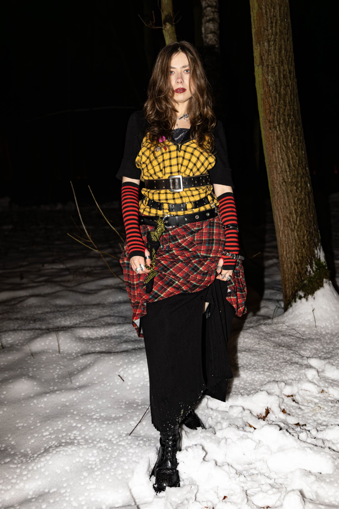
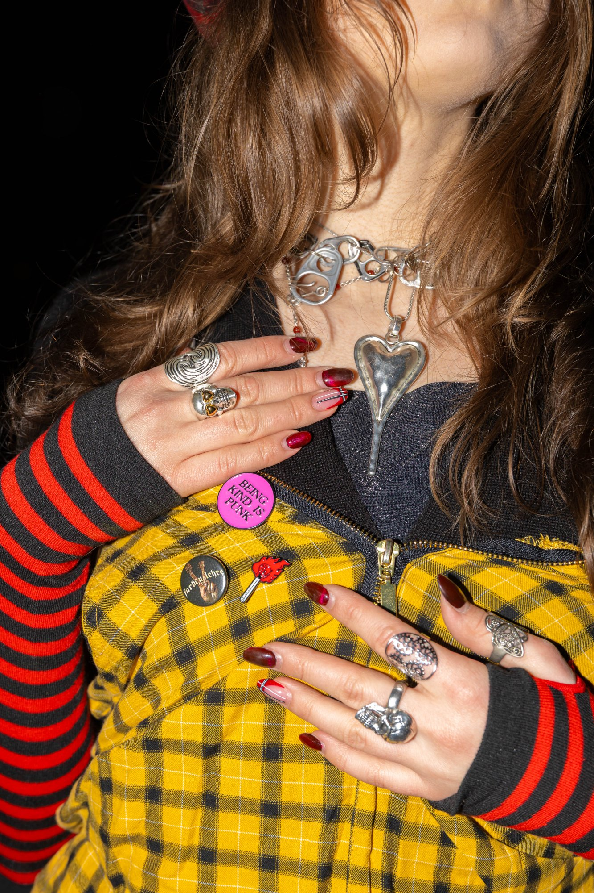
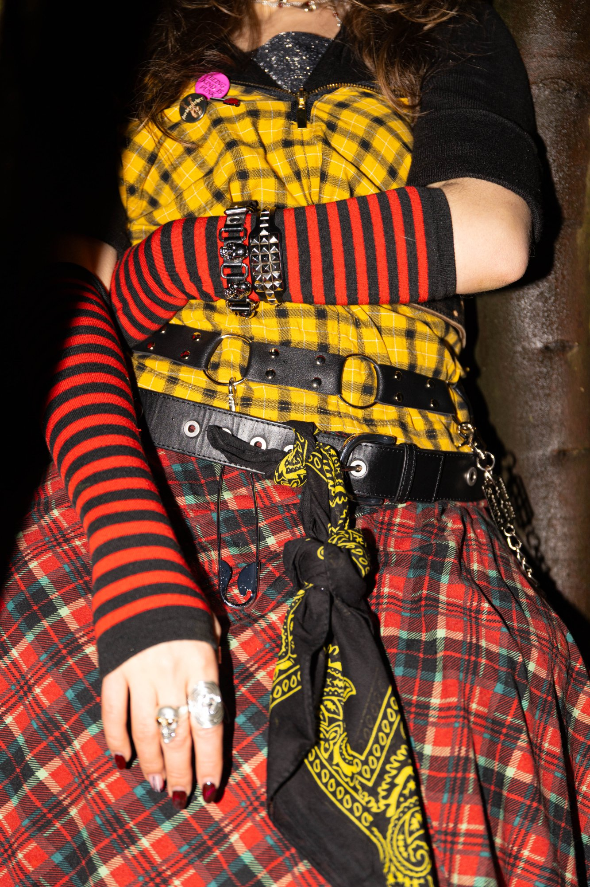
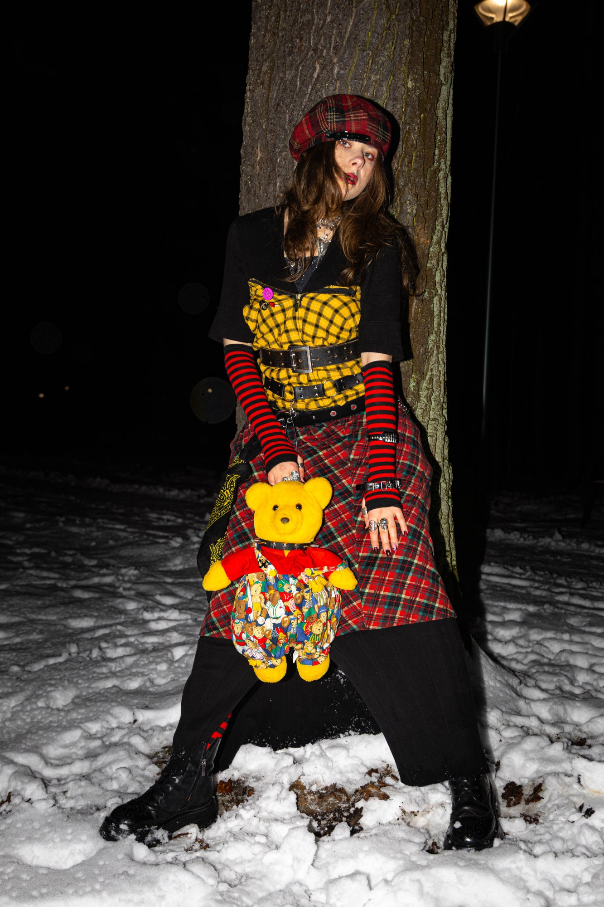

Tartan-
archy
Punk nie umarł — przezimował. Zimowy flash editorial łączący warstwy tartanu, skórzane uprzęże i dziecięcy absurd pluszowego misia w jedno bezkompromisowe spojrzenie. Vivienne Westwood spotyka podwórko za blokiem o drugiej w nocy.





„Bunt nie musi być wściekły. Czasem wystarczy pluszowy miś, trzy warstwy tartanu i agrafka w odpowiednim miejscu.”
Kontrolowany chaos — punk jako system warstwowania
Stylizacja buduje napięcie przez zderzenie dwóch klanowych tartanów (żółto-czarny i czerwono-zielony), spiętych skórzanymi pasami jak gorsetem. Pasiaste rękawki i agrafki przywołują londyński punk z King's Road, ale pluszowy miś i pin "Being Kind Is Punk" łamią agresję ironicznym ciepłem. Flashowe oświetlenie na tle śniegu daje surowy, dokumentalny charakter — editorial z energią backstage'u.